MolmoSpaces · training data
Tour context
Current query views
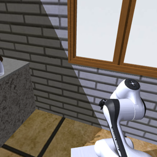
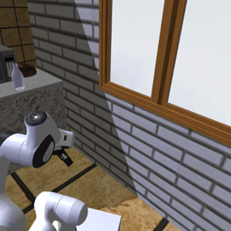
- Question
- In which direction is the vase, relative to the robot's current forward axis?
- Ground-truth bearing
- 179.3°; nearest 16-bin label: 180° (behind).
Vision-language-action policies have achieved impressive mobile manipulation capabilities, but remain brittle in unfamiliar multi-room environments. We find that much of this brittleness stems from failures of spatial generalization: strong policies often resort to reactive exploration when task-relevant locations move outside familiar layouts. Oracle spatial guidance largely prevents this degradation. We study how spatial context from a prior environment walkthrough video should be represented to guide mobile manipulation policies under environment shift. We find that strong in-distribution spatial prediction can be a poor predictor of out-of-distribution transfer, while models that explicitly encode 3D structure generalize more robustly to new robot environments. Building on this, we develop a hierarchical policy that uses a single environment video to provide spatially grounded guidance to a VLA. We find that navigation performance of mobile manipulation policies is heavily bottlenecked by spatial understanding, and that our strongest policy more than doubles the placement rate of its flat counterpart (24.8% vs. 10.9%) in our hardest setup.
We probe mobile manipulation policies in unfamiliar multi-room layouts, where task-relevant locations are moved to a separate room and a decoy room is added. Strong reactive policies spend substantial time exploring irrelevant locations, and their placement rates decrease. A hierarchical π0.5 policy with ground-truth navigation goals degrades substantially less, indicating that spatial guidance can mitigate this failure without improving the underlying manipulation skills.
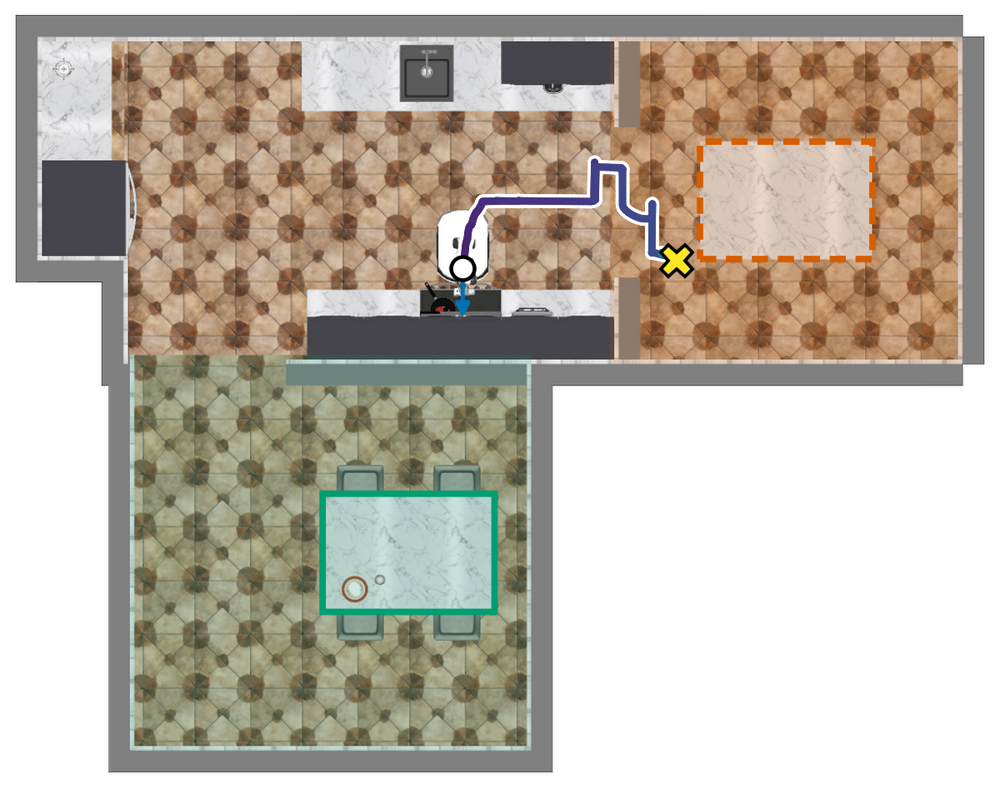
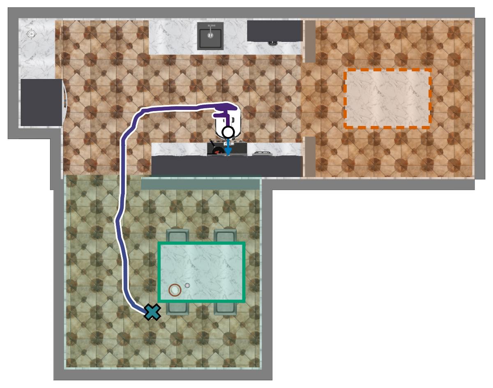
Motivating experiment, not our learned planner. These selected trajectory stills illustrate the paper's oracle comparison, for the task “Move the pan to the dining table.”
Task: Pick up the pan with the steak in it and place it on the dining table. Then place the steak on the plate.
All three policies start from the same saved scene (ServeSteak, trial 1, Unseen-Hard). This episode was selected to show XR-1's movement through the scene; it is not a random sample or an aggregate performance comparison. All head-camera recordings are shown at 4× speed. The players are independent. The oracle policy is a privileged probing baseline, not the learned spatial planner.
A high-level VLM planner conditions on a prerecorded environment tour, current egocentric observations, and the task instruction. It predicts subtask instructions and, for navigation subtasks, a binned polar hint specifying the target's distance and bearing relative to the robot base. A low-level π0.5 VLA predicts actions from the subtask, current egocentric observations, and proprioception, without receiving the tour directly.
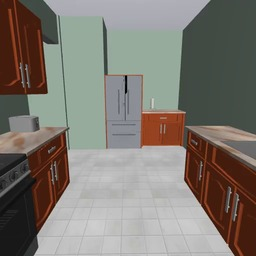
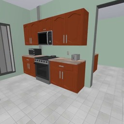
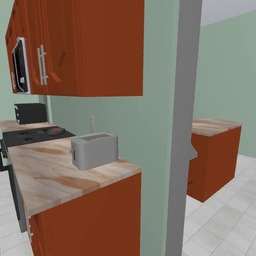
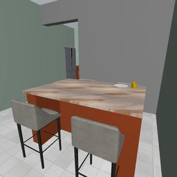
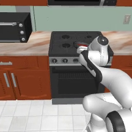
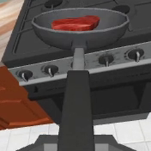
In the Q3D variant, tour depth and camera poses lift the views into a point cloud. In the estimated-geometry setting, Depth Anything 3 estimates depth and poses from RGB, and a SLAM-style module relocalizes current views against the tour reconstruction during execution. The ground-truth geometry variant instead receives simulator depth and camera poses.
Before task execution, the planner receives a single prerecorded tour of the environment. These examples show the visual context available in each evaluation setting; they are not robot task rollouts.
Selected ServeSteak tours: trial 1 in Seen and Unseen-Easy, and trial 16 in Unseen-Hard. Each six-second tour is shown at its original playback speed. The rollout videos above remain at 4× speed.
We instantiate spatial learning recipes with a Qwen3-VL-4B backbone, a shared data mix, and a fixed gradient-step budget. Models are trained to predict target bearings from a tour and egocentric query views. Geometric supervision and features improve spatial prediction, but in-distribution accuracy does not reliably predict transfer to RoboCasa. Among tour-conditioned models, Q3D has the lowest bearing accuracy on held-out MolmoSpaces houses and the highest on the target RoboCasa layouts.
Here we visualize examples from both the training and evaluation datasets, highlighting the robot's tour context and current query views. On the left, we visualize a sample from the MolmoSpaces-generated training data. On the right, we visualize a sample from the RoboCasa evaluation data.


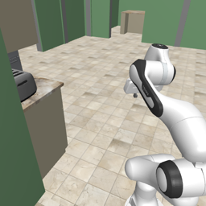
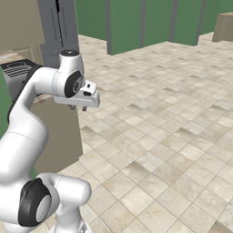
Both examples pair an earlier environment tour with the robot's current views. The model must use the tour to infer the direction to an object that is now out of sight: a vase in the MolmoSpaces training example and a plate in the RoboCasa evaluation example.
Learn spatial relationships from RGB video and question-answer supervision.
CS · Cambrian-S styleEncourage geometry through camera-pose prediction or geometry-aware input features.
CP · Cambrian-P style / V3R · VLM-3R styleRepresent the scene as a point cloud with 3D positional encodings.
Q3D · Qwen-3D styleBearing accuracy (%) for selected models. Q3D uses ground-truth tour geometry in this spatial study; these are not robot placement rates. The comparison does not establish that explicit 3D inputs are universally superior: finetuning and generalization remain factors in the observed differences.
| Evaluation distribution | CS | V3R | Q3D |
|---|---|---|---|
| Held-out MolmoSpaces houses | 70.3 | 72.0 | 46.7 |
| RoboCasa · Easy | 45.0 | 50.2 | 67.0 |
| RoboCasa · Hard | 39.3 | 40.1 | 56.5 |
We evaluate ten navigation-heavy tasks in an unseen multi-room extension of RoboCasa365. Each setting contains 200 episodes, with 20 episodes per task. All tour-conditioned planner variants share the same low-level executor, allowing us to study the effect of the planner's spatial representation on downstream control.
Training kitchens; task-relevant locations remain in the kitchen.
New layouts move the dining table to a connected, separate room.
An additional room contains a decoy table, creating an ambiguous navigation choice.
200 episodes per setting · 10 tasks × 20 episodes
In Unseen-Hard, Qwen3D with estimated geometry achieves 24.8% versus 10.9% for the flat policy: a 13.9 percentage-point gain.
What is placement rate? The fraction of a task's required placements completed, averaged over episodes. It is not full-task success. Ground-truth tour geometry is privileged information, shown separately from the RGB-based method.
| Method | Seen | Unseen-Easy | Unseen-Hard |
|---|---|---|---|
| Flat π0.5 | 41.6 | 20.4 | 10.9 |
| Hierarchical π0.5, no navigation hint | 38.9 | 21.3 | 13.0 |
| Stock Qwen3-VL-4B planner | 30.8 | 23.6 | 13.6 |
| CS planner | 33.9 | 18.9 | 13.0 |
| CP planner | 38.1 | 26.7 | 17.8 |
| V3R planner | 36.7 | 26.9 | 18.6 |
| Q3D planner, estimated geometry | 37.0 | 27.6 | 24.8 |
| Q3D planner, ground-truth geometry (privileged) | 36.3 | 34.4 | 32.5 |
We visualize rollouts on the ServeSteak task from three hierarchical policies with different planners and a shared low-level executor. In the videos, we add a red overlay when the planner predicts an inaccurate navigation hint. We observe that stock Qwen3-VL and VLM-3R-based planners predict incorrect hints, leading the robot to enter the decoy room. At the same time, the Q3D planner with privileged ground-truth tour geometry provides accurate hints, allowing the robot to reach the correct room.
These rollouts illustrate how a spatial prediction error can become a navigation failure: the executor follows the planner's instruction, but travels to the wrong room. In this matched comparison, more accurate spatial guidance allows the same executor to complete the task, illustrating why navigation-hint quality matters for mobile manipulation.
Unseen-Hard rollouts with the original predicted subtasks, shown at 4× speed. Red tint means the predicted navigation bearing differs by more than one 22.5 degree bin from ground truth.
Hover, tap, or focus a point to inspect its results. Select a point with Enter or Space. The matching Unseen-Hard examples link to the videos above.
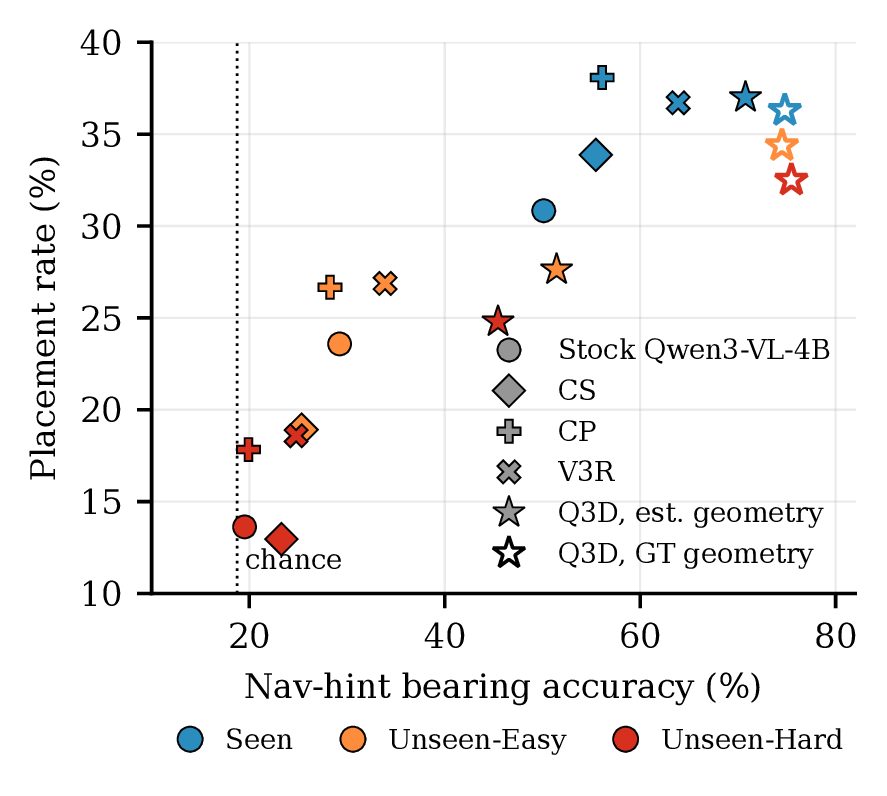
In Unseen-Hard, Q3D with estimated geometry achieves a placement rate of 24.8%, compared with 10.9% for the flat policy trained on the same robot data. It retains 67% of its Seen placement rate, whereas the flat policy retains 26%. Hierarchy alone, or a tour-conditioned planner without spatial midtraining, does not produce a comparable improvement.
Navigation-hint bearing accuracy during rollouts is correlated with placement rate (Pearson r = 0.89 across 18 planner-setting pairs). Q3D reaches 32.5% placement rate with ground-truth geometry, 7.7 percentage points above the estimated-geometry variant in Unseen-Hard. This gap suggests that recovering accurate geometry from RGB remains an important bottleneck.
Our experiments in simulated multi-room environments support the following conclusions.
Strong local navigation and manipulation skills do not by themselves provide knowledge of task-relevant locations in unfamiliar layouts. Oracle spatial guidance substantially reduces the degradation under layout shift, suggesting that scaling robot data alone may not be sufficient.
Models with strong bearing prediction on held-out houses from the midtraining distribution can transfer poorly to RoboCasa. Explicit 3D representations transfer most robustly in our study, supporting evaluation of spatial models on new environments and downstream behavior rather than only on their training distribution.
Hint accuracy during rollouts closely tracks placement rate (Pearson r = 0.89). With geometry estimated from the tour, the hierarchical Q3D policy achieves 24.8% placement rate in Unseen-Hard, compared with 10.9% for the flat policy trained on the same robot data.
Ground-truth tour geometry raises Q3D's Unseen-Hard placement rate from 24.8% to 32.5%. This privileged comparison indicates substantial room to improve the spatial structure recovered from RGB video.